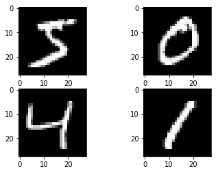

Keras- Convolutional Neural Network
Digit Recognization: NMIST
1. Baseline MLP for MNIST dataset
# Baseline MLP for MNIST dataset import numpy from keras.datasets import mnist from keras.models import Sequential from keras.layers import Dense from keras.layers import Dropout from keras.utils import np_utils
Using TensorFlow backend.
Prepare Data Set
# fix random seed for reproducibility seed = 7 numpy.random.seed(seed) # load data (X_train, y_train), (X_test, y_test) = mnist.load_data()
- How many data files are there?
X_train.shape,X_test.shape
((60000, 28, 28), (10000, 28, 28))
y_train.shape,y_test.shape
((60000,), (10000,))
Visualize the data
import matplotlib.pyplot as plt %matplotlib inline plt.figure(figsize = [10,8]) for i in range(1,10): plt.subplot(3,3,i) plt.imshow(X_train[i]) plt.show()

Convert Image matrix to Vector
# flatten 28*28 images to a 784 vector for each image num_pixels = X_train.shape[1] * X_train.shape[2] X_train = X_train.reshape(X_train.shape[0], num_pixels).astype('float32') X_test = X_test.reshape(X_test.shape[0], num_pixels).astype('float32')
Normalization
# normalize inputs from 0-255 to 0-1 X_train = X_train / 255 X_test = X_test / 255
Prepare Labels
# one hot encode outputs y_train = np_utils.to_categorical(y_train) y_test = np_utils.to_categorical(y_test) num_classes = y_test.shape[1]
Model
# define baseline model def baseline_model(): # create model model = Sequential() model.add(Dense(num_pixels, input_dim=num_pixels, kernel_initializer='normal', activation='relu')) model.add(Dense(num_classes, kernel_initializer='normal', activation='softmax')) # Compile model model.compile(loss='categorical_crossentropy', optimizer='adam', metrics=['accuracy']) return model
Build Model
model = baseline_model() model.summary() # Fit the model model.fit(X_train, y_train, validation_data=(X_test, y_test), epochs=10, batch_size=200, verbose=2)
WARNING:tensorflow:From /Users/admin/anaconda3/lib/python3.7/site-packages/tensorflow/python/framework/op_def_library.py:263: colocate_with (from tensorflow.python.framework.ops) is deprecated and will be removed in a future version. Instructions for updating: Colocations handled automatically by placer. _________________________________________________________________ Layer (type) Output Shape Param # ================================================================= dense_1 (Dense) (None, 784) 615440 _________________________________________________________________ dense_2 (Dense) (None, 10) 7850 ================================================================= Total params: 623,290 Trainable params: 623,290 Non-trainable params: 0 _________________________________________________________________ WARNING:tensorflow:From /Users/admin/anaconda3/lib/python3.7/site-packages/tensorflow/python/ops/math_ops.py:3066: to_int32 (from tensorflow.python.ops.math_ops) is deprecated and will be removed in a future version. Instructions for updating: Use tf.cast instead. Train on 60000 samples, validate on 10000 samples Epoch 1/10 - 4s - loss: 0.2801 - acc: 0.9209 - val_loss: 0.1417 - val_acc: 0.9572 Epoch 2/10 - 3s - loss: 0.1118 - acc: 0.9676 - val_loss: 0.0921 - val_acc: 0.9705 Epoch 3/10 - 3s - loss: 0.0720 - acc: 0.9794 - val_loss: 0.0785 - val_acc: 0.9773 Epoch 4/10 - 3s - loss: 0.0505 - acc: 0.9857 - val_loss: 0.0739 - val_acc: 0.9772 Epoch 5/10 - 3s - loss: 0.0372 - acc: 0.9892 - val_loss: 0.0665 - val_acc: 0.9792 Epoch 6/10 - 3s - loss: 0.0267 - acc: 0.9929 - val_loss: 0.0620 - val_acc: 0.9808 Epoch 7/10 - 3s - loss: 0.0208 - acc: 0.9947 - val_loss: 0.0618 - val_acc: 0.9808 Epoch 8/10 - 3s - loss: 0.0142 - acc: 0.9967 - val_loss: 0.0630 - val_acc: 0.9807 Epoch 9/10 - 3s - loss: 0.0113 - acc: 0.9976 - val_loss: 0.0589 - val_acc: 0.9807 Epoch 10/10 - 3s - loss: 0.0082 - acc: 0.9984 - val_loss: 0.0581 - val_acc: 0.9818 <keras.callbacks.History at 0x1298a5eb8>
Evaluation
# Final evaluation of the model scores = model.evaluate(X_test, y_test, verbose=0) print("Baseline Error: %.2f%%" % (100-scores[1]*100))
Baseline Error: 1.82%
2. Simple CNN for the MNIST Dataset
# Simple CNN for the MNIST Dataset from keras.layers import Flatten from keras.layers.convolutional import Conv2D from keras.layers.convolutional import MaxPooling2D
# fix dimension ordering issue from keras import backend as K K.set_image_dim_ordering('th')
Get Data
# fix random seed for reproducibility seed = 7 numpy.random.seed(seed) # load data (X_train, y_train), (X_test, y_test) = mnist.load_data() # reshape to be [samples][channels][width][height] X_train = X_train.reshape(X_train.shape[0], 1, 28, 28).astype('float32') X_test = X_test.reshape(X_test.shape[0], 1, 28, 28).astype('float32') # normalize inputs from 0-255 to 0-1 X_train = X_train / 255 X_test = X_test / 255 # one hot encode outputs y_train = np_utils.to_categorical(y_train) y_test = np_utils.to_categorical(y_test) num_classes = y_test.shape[1]
Model
# define a simple CNN model def baseline_model(): # create model model = Sequential() model.add(Conv2D(32, (5, 5), input_shape=(1, 28, 28), activation='relu')) model.add(MaxPooling2D(pool_size=(2, 2))) model.add(Dropout(0.2)) model.add(Flatten()) model.add(Dense(128, activation='relu')) model.add(Dense(num_classes, activation='softmax')) # Compile model model.compile(loss='categorical_crossentropy', optimizer='adam', metrics=['accuracy']) return model
Build
# build the model model = baseline_model() model.summary()
WARNING:tensorflow:From /Users/admin/anaconda3/lib/python3.7/site-packages/keras/backend/tensorflow_backend.py:3445: calling dropout (from tensorflow.python.ops.nn_ops) with keep_prob is deprecated and will be removed in a future version. Instructions for updating: Please use `rate` instead of `keep_prob`. Rate should be set to `rate = 1 - keep_prob`. _________________________________________________________________ Layer (type) Output Shape Param # ================================================================= conv2d_1 (Conv2D) (None, 32, 24, 24) 832 _________________________________________________________________ max_pooling2d_1 (MaxPooling2 (None, 32, 12, 12) 0 _________________________________________________________________ dropout_1 (Dropout) (None, 32, 12, 12) 0 _________________________________________________________________ flatten_1 (Flatten) (None, 4608) 0 _________________________________________________________________ dense_3 (Dense) (None, 128) 589952 _________________________________________________________________ dense_4 (Dense) (None, 10) 1290 ================================================================= Total params: 592,074 Trainable params: 592,074 Non-trainable params: 0 _________________________________________________________________
Fit Model
# Fit the model model.fit(X_train, y_train, validation_data=(X_test, y_test), epochs=4, batch_size=200)
Train on 60000 samples, validate on 10000 samples Epoch 1/4 60000/60000 [==============================] - 26s 436us/step - loss: 0.2234 - acc: 0.9364 - val_loss: 0.0783 - val_acc: 0.9751 Epoch 2/4 60000/60000 [==============================] - 26s 428us/step - loss: 0.0712 - acc: 0.9787 - val_loss: 0.0456 - val_acc: 0.9851 Epoch 3/4 60000/60000 [==============================] - 25s 419us/step - loss: 0.0510 - acc: 0.9844 - val_loss: 0.0439 - val_acc: 0.9860 Epoch 4/4 60000/60000 [==============================] - 25s 416us/step - loss: 0.0393 - acc: 0.9880 - val_loss: 0.0402 - val_acc: 0.9878 <keras.callbacks.History at 0xb416675c0>
Evaluate Model
# Final evaluation of the model scores = model.evaluate(X_test, y_test, verbose=0) print("CNN Error: %.2f%%" % (100-scores[1]*100))
CNN Error: 1.22%
3. Larger CNN for the MNIST Dataset
Prepare Data
K.set_image_dim_ordering('th') # fix random seed for reproducibility seed = 7 numpy.random.seed(seed) # load data (X_train, y_train), (X_test, y_test) = mnist.load_data() # reshape to be [samples][pixels][width][height] X_train = X_train.reshape(X_train.shape[0], 1, 28, 28).astype('float32') X_test = X_test.reshape(X_test.shape[0], 1, 28, 28).astype('float32') # normalize inputs from 0-255 to 0-1 X_train = X_train / 255 X_test = X_test / 255 # one hot encode outputs y_train = np_utils.to_categorical(y_train) y_test = np_utils.to_categorical(y_test) num_classes = y_test.shape[1]
Model
# define the larger model def larger_model(): # create model model = Sequential() model.add(Conv2D(30, (5, 5), input_shape=(1, 28, 28), activation='relu')) model.add(MaxPooling2D(pool_size=(2, 2))) model.add(Conv2D(15, (3, 3), activation='relu')) model.add(MaxPooling2D(pool_size=(2, 2))) model.add(Dropout(0.2)) model.add(Flatten()) model.add(Dense(128, activation='relu')) model.add(Dense(50, activation='relu')) model.add(Dense(num_classes, activation='softmax')) # Compile model model.compile(loss='categorical_crossentropy', optimizer='adam', metrics=['accuracy']) return model
Build Model
# build the model model = larger_model()
Fit Model
# Fit the model model.fit(X_train, y_train, validation_data=(X_test, y_test), epochs=10, batch_size=200)
Train on 60000 samples, validate on 10000 samples Epoch 1/10 60000/60000 [==============================] - 31s 510us/step - loss: 0.3871 - acc: 0.8817 - val_loss: 0.0904 - val_acc: 0.9714 Epoch 2/10 60000/60000 [==============================] - 30s 494us/step - loss: 0.0998 - acc: 0.9699 - val_loss: 0.0540 - val_acc: 0.9829 Epoch 3/10 60000/60000 [==============================] - 30s 504us/step - loss: 0.0738 - acc: 0.9772 - val_loss: 0.0417 - val_acc: 0.9864 Epoch 4/10 60000/60000 [==============================] - 29s 492us/step - loss: 0.0602 - acc: 0.9816 - val_loss: 0.0375 - val_acc: 0.9870 Epoch 5/10 60000/60000 [==============================] - 29s 487us/step - loss: 0.0517 - acc: 0.9835 - val_loss: 0.0359 - val_acc: 0.9886 Epoch 6/10 60000/60000 [==============================] - 29s 476us/step - loss: 0.0446 - acc: 0.9855 - val_loss: 0.0307 - val_acc: 0.9902 Epoch 7/10 60000/60000 [==============================] - 40s 665us/step - loss: 0.0393 - acc: 0.9880 - val_loss: 0.0313 - val_acc: 0.9900 Epoch 8/10 60000/60000 [==============================] - 33s 551us/step - loss: 0.0357 - acc: 0.9887 - val_loss: 0.0259 - val_acc: 0.9911 Epoch 9/10 60000/60000 [==============================] - 30s 508us/step - loss: 0.0322 - acc: 0.9899 - val_loss: 0.0242 - val_acc: 0.9925 Epoch 10/10 60000/60000 [==============================] - 31s 512us/step - loss: 0.0307 - acc: 0.9898 - val_loss: 0.0271 - val_acc: 0.9906 <keras.callbacks.History at 0xb2e19f320>
Evalauation
# Final evaluation of the model scores = model.evaluate(X_test, y_test, verbose=0) print("Large CNN Error: %.2f%%" % (100-scores[1]*100))
Large CNN Error: 0.94%
Plot
# Plot ad hoc mnist instances from keras.datasets import mnist import matplotlib.pyplot as plt # load (downloaded if needed) the MNIST dataset (X_train, y_train), (X_test, y_test) = mnist.load_data() # plot 4 images as gray scale plt.subplot(221) plt.imshow(X_train[0], cmap=plt.get_cmap('gray')) plt.subplot(222) plt.imshow(X_train[1], cmap=plt.get_cmap('gray')) plt.subplot(223) plt.imshow(X_train[2], cmap=plt.get_cmap('gray')) plt.subplot(224) plt.imshow(X_train[3], cmap=plt.get_cmap('gray')) # show the plot plt.show()
